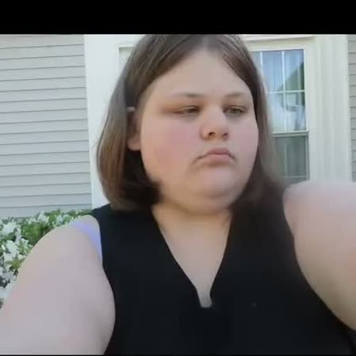

About me
Hi, I’m Mary Robinson.
I’m a beginner photographer — I’ve been shooting professionally since November 2025, and even though I’m a beginner, I’m good at what I do.
I’m blind: I have optic nerve hypoplasia, and I can see light, colors, and shadows. My clients tell me they love my work, and that means everything to me.
I shoot families and portraits, I’m getting into senior photography, and pet photography is next on my list. I’ve been a shutterbug since I was three years old. I’ve always been fascinated by cameras, owned many over the years, and always dreamed of becoming a professional photographer.
I’m a Christian, and in everything I do, I try to bring glory to God.
My story
My Story
I'm Mary Robinson, a photographer in York, South Carolina. I have vision limitations, and I see the world a little differently — through light, color, and shadow. Photography is how I share what I see with the people I love.
I don't edit my photos. What you see is what you get: true, honest color, exactly as it was in the moment. Every person who steps in front of my camera is trusting me with a piece of their story, and I take that seriously.
My goal is simple — photographs that look like you, feel like you, and last a lifetime.